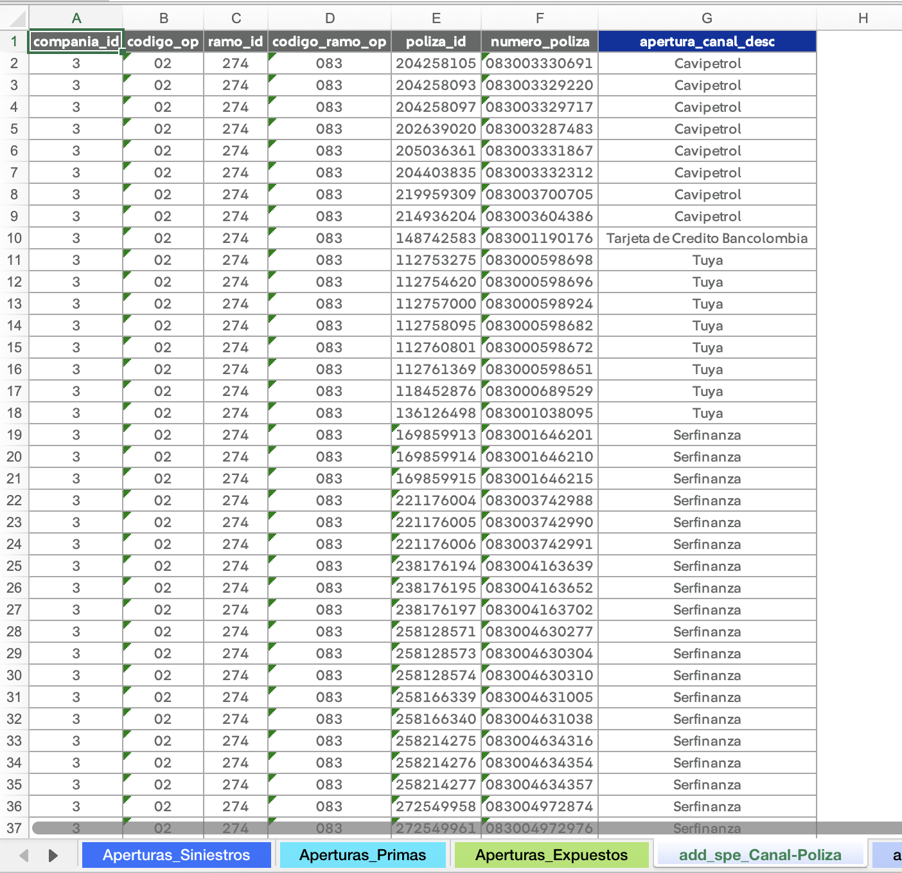

Construcción de queries
Para realizar un análisis de siniestralidad, necesitamos información de siniestros, primas, y expuestos. Uno de los mecanismos provistos por la aplicación para obtener esta información es a través de consultas de Teradata.
A continuación, se describe:
- La estructura mínima que deben tener las salidas de los queries.
- Cómo definir las aperturas dentro de sus consultas.
Ejemplos
Consulte ejemplos reales de queries utilizados para los cierres contables.
Estructuras mínimas
Las salidas de las consultas que construya deben contener, como mínimo, las columnas detalladas a continuación.
Siniestros
| Nombre de la columna | Descripción |
|---|---|
| codigo_op | Código de la compañía (01 para Generales, 02 para Vida). |
| codigo_ramo_op | Código del ramo. |
| "columnas de aperturas" | Por ejemplo: apertura_canal, apertura_amparo, tipo_vehiculo, etc. |
| atipico | Binaria: 1 si es un siniestro atípico, 0 si es típico. |
| fecha_siniestro | Fecha de ocurrencia del siniestro. |
| fecha_registro | Fecha de movimiento (pago o aviso). |
| conteo_pago | Conteo de siniestros pagados. |
| conteo_incurrido | Conteo de siniestros incurridos. |
| conteo_desistido | Conteo de siniestros desistidos. |
| pago_bruto | Valor del pago bruto. |
| pago_retenido | Valor del pago retenido. |
| aviso_bruto | Valor del aviso bruto (movimiento, no saldo). |
| aviso_retenido | Valor del aviso retenido (movimiento, no saldo.) |
Primas
| Nombre de la columna | Descripción |
|---|---|
| codigo_op | Código de la compañía (01 para Generales, 02 para Vida). |
| codigo_ramo_op | Código del ramo. |
| "columnas de aperturas" | Pueden diferir de las columnas de aperturas de siniestros y expuestos. |
| fecha_registro | Fecha de movimiento. |
| prima_bruta | Valor de la prima bruta. |
| prima_retenida | Valor de la prima retenida. |
| prima_bruta_devengada | Valor de la prima bruta devengada. |
| prima_retenida_devengada | Valor de la prima retenida devengada. |
Expuestos
| Nombre de la columna | Descripción |
|---|---|
| codigo_op | Código de la compañía (01 para Generales, 02 para Vida). |
| codigo_ramo_op | Código del ramo. |
| "columnas de aperturas" | Pueden diferir de las columnas de aperturas de siniestros y primas. |
| fecha_registro | Fecha de exposición. |
| expuestos | Número de expuestos del periodo. |
| vigentes | Número de vigentes del periodo. |
Definición de aperturas
Desde el query (camino sencillo)
Se recomienda si la apertura es sencilla y no depende de otras aperturas. Por ejemplo:
CASE
WHEN fas.clase_tarifa_cd IN (2, 3) THEN 'MOTOS'
WHEN fas.clase_tarifa_cd IN (4, 5, 6) THEN 'UTILITARIOS'
ELSE 'LIVIANOS'
END AS tipo_vehiculo_desc
Desde el archivo segmentación (camino complejo)
Se recomienda si la apertura tiene una lógica compleja o depende de otras aperturas.
-
Cree una hoja en el archivo de segmentación:
- El nombre de la hoja debe seguir el siguiente formato:
add_{indicador_cantidad}_{alias_apertura}. indicador_cantidadadmite tres posibles valores:spara siniestros,ppara primas, yepara expuestos.
Ejemplo
Si los siniestros se van a aperturar por amparo, el nombre de la hoja sería
add_s_Amparos. Si tanto siniestros como primas y expuestos se van a aperturar por esta variable, el nombre seríaadd_spe_Amparos. - El nombre de la hoja debe seguir el siguiente formato:
-
Cree la tabla con la definicion de la apertura. Ejemplo:

Nota
Las columnas grises de la imagen corresponden a las columnas como aparecen en Teradata, mientras que la columna azul oscura representa la definición de la apertura creada por el usuario.
-
En el query, cree una tabla volátil para recibir la tabla de apertura:
CREATE MULTISET VOLATILE TABLE canal_poliza ( compania_id SMALLINT NOT NULL , codigo_op VARCHAR(100) NOT NULL , ramo_id INTEGER NOT NULL , codigo_ramo_op VARCHAR(100) NOT NULL , poliza_id BIGINT NOT NULL , numero_poliza VARCHAR(100) NOT NULL , apertura_canal_desc VARCHAR(100) NOT NULL ) PRIMARY INDEX ( poliza_id, codigo_ramo_op, compania_id ) ON COMMIT PRESERVE ROWS; INSERT INTO CANAL_POLIZA VALUES (?, ?, ?, ?, ?, ?, ?); COLLECT STATISTICS ON canal_poliza INDEX ( poliza_id, codigo_ramo_op, compania_id );Tip
Siempre defina índices primarios y ejecute
COLLECT STATISTICSpara que Teradata optimice el query. -
Utilice la tabla en el resto de consultas para definir la apertura.
SELECT ... , COALESCE(p.apertura_canal_desc, 'RESTO') AS apertura_canal_desc ... FROM mdb_seguros_colombia.v_hist_polcert_cobertura AS vpc ... LEFT JOIN canal_poliza AS p ON vpc.poliza_id = p.poliza_id AND ramo.codigo_ramo_op = p.codigo_ramo_op AND cia.compania_id = p.compania_id WHERE ... GROUP BY ...